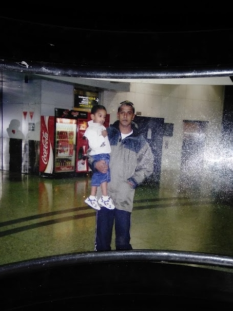
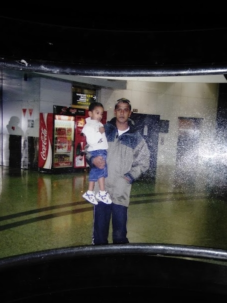

all about me..
Hi, I'm Shivam [s3953555(@student.rmit.edu.au)]! I come straight from CDSC (Carrum Downs Secondary College) doing my VCE in music, media, software development, and math. My family comes from fiji with indian heritage but I myself was born in australia ଘ(੭ˊᵕˋ)੭
Some fun facts about me are:
- pretty ok at rhythm games like Dance Dance Revolution
- i'm a big fan of fishing minigames
- avid bread fan
- i produce electronic music and play saxophone
Some hobbyist fields I like a lot are:
- data science and visualisation
- custom mechanical keyboards
- i'm not kidding i really like fishing games
- music composition (ableton, and trying to learn trackers!)
- arcade rhythm games
- amateur modelling and photography
- no like i have a collection of reviews i've done of fishing minigames
if you're interested at all in me, you can contact me @brownskrillex on twitter or wlika#4707 on discord!
let's have lots of fun this semester and year!!